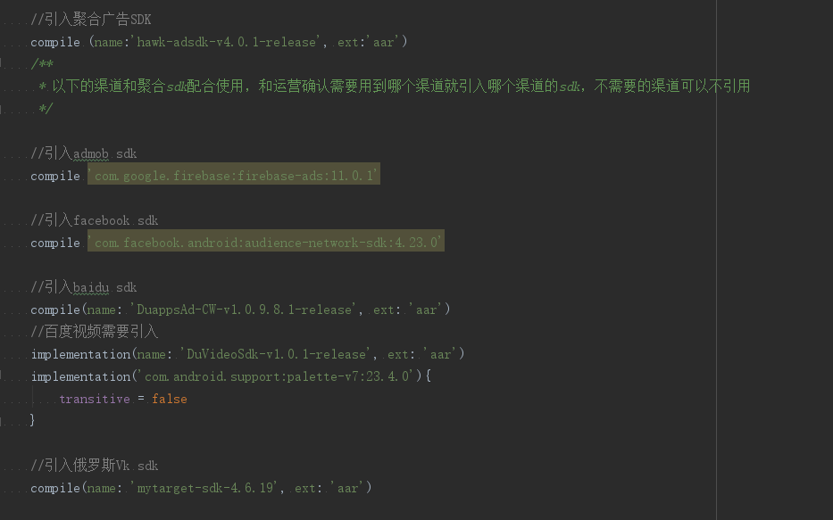

1. 接入步骤（细节参考Demo）
1.1. 步骤1：添加SDK到工程中
请在工程文件根目录下创建一个名为 libs 的子目录，并将聚合广告 SDK 的 aar（adsdk.aar） 包拷贝到 libs 目录下。其中hawk-adsdk-v4.0.1-release为聚合sdk必须要引入， 其它的sdk包根据需要是否接入该渠道，自行决定是否引入。
1.2. 步骤2: 修改build.gradle文件
在dependencies节点添加如下代码：
//引入聚合广告SDK
compile (name:'hawk-adsdk-v4.0.1-release', ext:'aar')
/**
* 以下的渠道和聚合sdk配合使用，和运营确认需要用到哪个渠道就引入哪个渠道的sdk，不需要的渠道可以不引用
*/
//引入admob sdk
compile 'com.google.firebase:firebase-ads:11.0.1'
//引入facebook sdk
compile 'com.facebook.android:audience-network-sdk:4.23.0'
//引入baidu sdk
compile(name: 'DuappsAd-CW-v1.0.9.8.1-release', ext: 'aar')
//百度视频需要引入
implementation(name: 'DuVideoSdk-v1.0.1-release', ext: 'aar')
implementation('com.android.support:palette-v7:23.4.0'){
transitive = false
}
//引入俄罗斯Vk sdk
compile(name: 'mytarget-sdk-4.6.19', ext: 'aar')
//引入直客 sdk
compile(name: 'hawk-mobpalm-v1.5.4-release', ext: 'aar')
//引入mopub Banner广告sdk
compile('com.mopub:mopub-sdk-banner:4.10.0@aar') {
transitive = true
}
//引入mopub 插屏广告sdk
compile('com.mopub:mopub-sdk-interstitial:4.10.0@aar') {
transitive = true
}
//引入mopub 原生广告sdk
compile('com.mopub:mopub-sdk-native-static:4.10.0@aar') {
transitive = true
}
//引入flurry 广告sdk
compile 'com.flurry.android:ads:6.2.0'
//引入 adcolony 激励视频Sdk
implementation 'com.adcolony:sdk:3.2.1'
//引入 vungle 激励视频Sdk
implementation 'com.github.vungle:vungle-android-sdk:5.3.0'
//Glispa 需要引入的包
compile(name: 'core',version: '4.6.2', ext: 'aar')
compile(name: 'insights',version: '4.6.2', ext: 'aar')
compile(name: 'mediation-sdk',version: '4.6.2', ext: 'aar')
compile(name: 'mediation-sdk-native-assets',version: '4.6.2', ext: 'aar')
repositories{
flatDir{
dirs'libs'
}
}

1.3. 步骤3: 修改AndroidManifest.xml文件
添加权限声明：
<uses-permission android:name="android.permission.INTERNET"/>
<uses-permission android:name="android.permission.ACCESS_NETWORK_STATE"/>
<uses-permission android:name="android.permission.ACCESS_WIFI_STATE"/>
//mopub need this permission
<uses-permission android:name="android.permission.WRITE_EXTERNAL_STORAGE"/>
//only needed if you want the device to automatically send the user’s location for targeting.
<uses-permission android:name="android.permission.ACCESS_COARSE_LOCATION"/>
<uses-permission android:name="android.permission.ACCESS_FINE_LOCATION"/>
※ 其中 //mobpub need permission 以下部分是mupub广告平台需要的权限,
如下图：
如果没有集成mopub可以不添加;
接入任意平台广告都需要在XML中的application节点添加以下声明：
//admob ad need add this
<meta-data android:name="com.google.android.gms.version"
android:value="@integer/google_play_services_version" //>
//mopub ad need add this
<activity android:name="com.mopub.mobileads.MoPubActivity" android:configChanges="keyboardHidden|orientation|screenSize"/>
<activity android:name="com.mopub.mobileads.MraidActivity" android:configChanges="keyboardHidden|orientation|screenSize"/>
<activity android:name="com.mopub.common.MoPubBrowser" android:configChanges="keyboardHidden|orientation|screenSize"/>
<activity android:name="com.mopub.mobileads.MraidVideoPlayerActivity" android:configChanges="keyboardHidden|orientation|screenSize"/>
目前支持的SDK版本，最低到API 15（即Android系统版本4.0）：
<uses-sdk android:minSdkVersion="15" android:targetSdkVersion="22" />
// 如果开发者一定要targetSdkVersion到API 23以上，请确保调用任何聚合SDK的接口前，已经申请到了SDK要求的所有权限。否则聚合SDK将无法工作。
1.4. 步骤4: 修改混淆文件
在proguard-rules.pro添加如下代码：
-dontwarn com.hawk.android.adsdk.ads.mediator.**
-keep class com.hawk.android.adsdk.ads.**{*;}
-keep class com.tcl.mediator.**{*;}
-keep class com.hawk.ownadsdk.**{*;}
# Required to preserve the Flurry SDK
-keep class com.flurry.** { *; }
-dontwarn com.flurry.**
-keep class com.adcolony.** { *; }
-keep class com.vungle.** { *; }
-keep class com.duapps.ad.**{*;}
-dontwarn com.duapps.ad.**
-keep class com.my.target.** {*;}
#-kepp class com.google.android.gms.ads.**{*;}
-keep class com.google.android.gms.ads.MobileAds{
<fields>;
<methods>;
}
-keep class com.duapps.ad.base.DuAdNetwork{
<fields>;
<methods>;
}
-keep class com.mopub.mobileads.MoPubActivity{
<fields>;
<methods>;
}
-keep class com.mopub.mobileads.MraidActivity{
<fields>;
<methods>;
}
-keep class com.mopub.common.MoPubBrowser{
<fields>;
<methods>;
}
-keep class com.mopub.mobileads.MraidVideoPlayerActivity{
<fields>;
<methods>;
}
-keep class com.etap.** { *; }#batmobi平台
# Required to preserve the Avocarrot SDK(Glispa)
-keep class com.avocarrot.** { *; }
-dontwarn com.avocarrot.**
-keep public class
com.google.android.gms.common.internal.safeparcel.SafeParcelable
{
public static final *** NULL;
}
-keepnames @com.google.android.gms.common.annotation.KeepName class *
-keepclassmembernames class * {
@com.google.android.gms.common.annotation.KeepName *;
}
-keepattributes Signature #过滤泛型
-keepattributes *Annotation* # 过滤注解
-keepattributes InnerClasses #
-dontoptimize